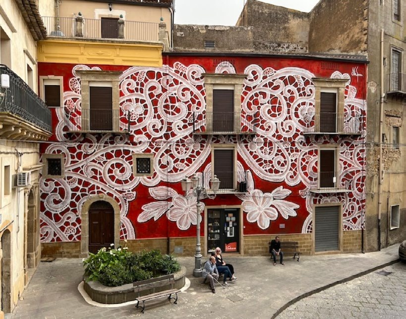
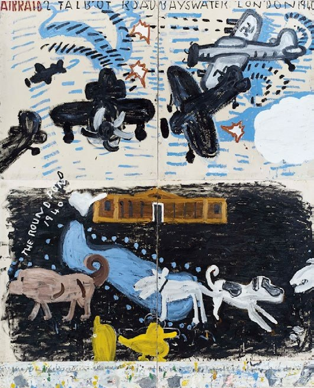
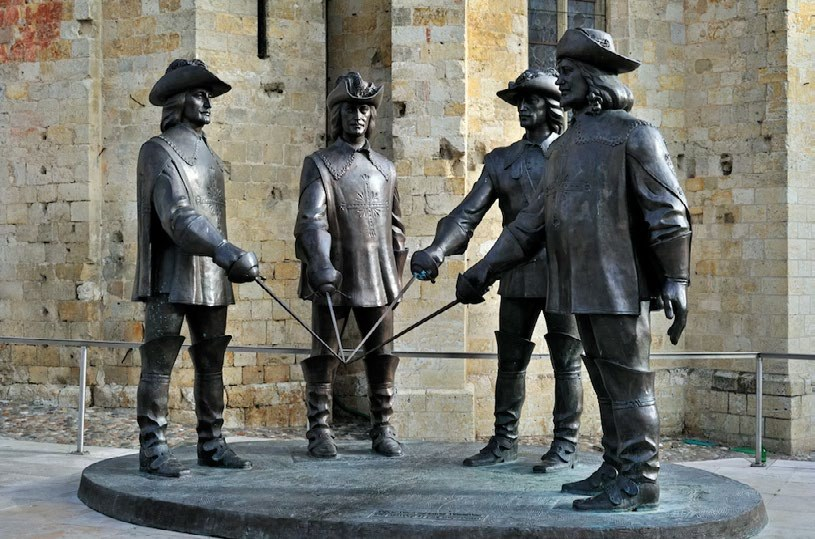
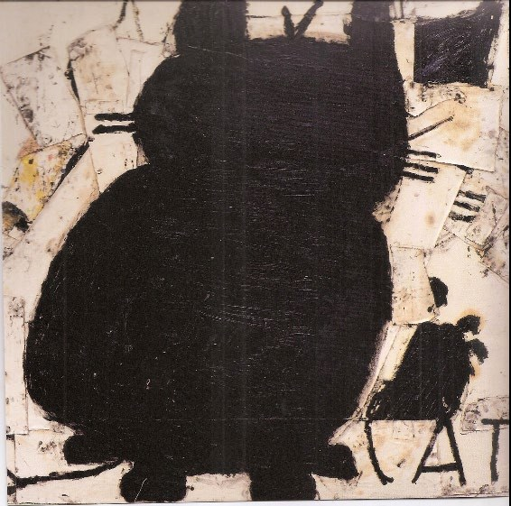
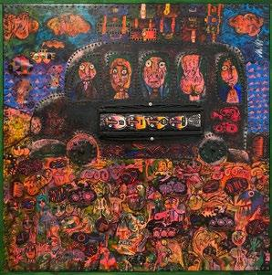

En este número
-

Arte · ArquitecturaNeSpoon transforma la arquitectura con murales de encaje
Patrones de encaje, de la clase que suele adornar textiles heredados, reproducidos a una escala lo suficientemente grande para arropar edificios enteros. Lo doméstico se torna monumental.
-

ArteA sus 91, Rose Wylie todavía rompe reglas con sus alegres pinturas
La primera artista británica —y la de más edad— en tener una exposición en las galerías de la Real Academia. Una arquetípica flor tardía, convertida en estrella global del arte.
-

Arqueología · HistoriaHuesos en una iglesia holandesa pueden ser de d'Artagnan
Los restos del mosquetero de Alexandre Dumas pudieron haber sido hallados bajo las losetas de la iglesia de San Pedro y San Pablo en Maastricht. Análisis de DNA en curso.
-

ExposiciónLa huella de la madera: xilografías de José A. Peláez
Treinta y tres xilografías, una serigrafía y una serie de tarjetas postales en la Galería Francisco Oller de la UPR-Río Piedras. Inaugurada el 16 de abril.
-

ExposiciónEcos del tiempo: pinturas de la colección
Un breve recorrido por la pintura puertorriqueña representada en la colección del Museo de la UPR, desde José Campeche hasta el presente.
-
Anuncio
Conversatorios próximos
Se anunciarán próximamente conversatorios en torno a la exposición La huella del papel en la Galería Francisco Oller.